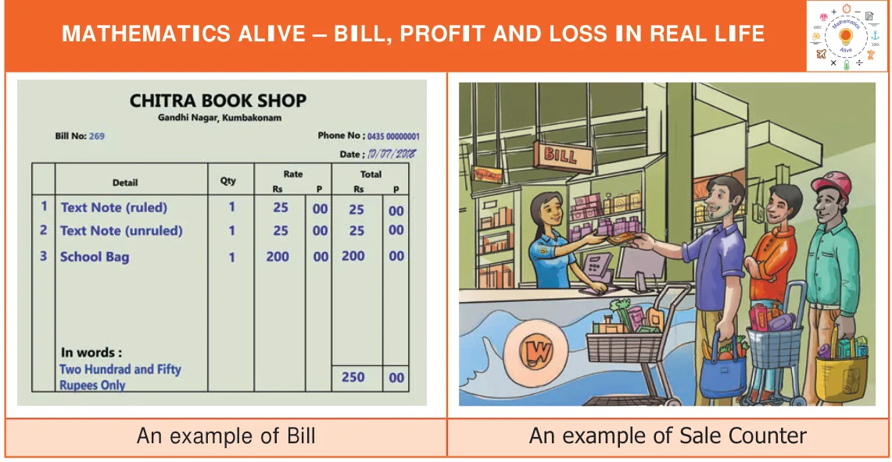

BILL, BILL, 3 PROFIT AND LOSSPROFIT AND LOSS
CHAPTERCHAPTER
Learning Objectives
- ●To prepare a bill and verify the bill amount.
- ●To calculate profit and loss.
- ●To calculate Cost Price (C.P.), Selling Price (S.P.), Marked Price (M.P.) and Discount.
As everyone cannot produce each and every commodity that he/she uses in the day-to-day life, one has to buy them from companies, firm, stores, shops or individuals. In all these activities, business takes place. So, business is an organised effort of individuals to produce and sell the commodities that satisfies the needs of the society. Every business involves bills, profit, loss etc. In this chapter, we are going to learn about the bills that we come across in everyday life. Also, we will learn about profit and loss in a transaction of a business.

Bill
Kothai is getting ready for Term \(- II\) studies in her school. Her mother gives Kothai `300 to purchase the stationery items like note book, pen, pencil, geometry box etc. Kothai purchased some stationery items and brought home the following bill.